D-Edge-Softwarehandbuch
Eine Veröffentlichung von Donatoni Macchine S.r.l.
Softwareversion: 2026.1.0.0
Handbuchversion: 1.0
Datum: 13/04/2026
- 1 VORBEMERKUNGEN
- 2 D-EDGE
- 2.1 STARTSEITE
- 2.2 ALARMSEITE
- 2.3 REZEPTSEITE
- 2.3.1 BEARBEITUNGEN
- 2.3.1.1 OBERE KALIBRIERUNG
- 2.3.1.2 OBERE KALIBRIERUNG UND POLIERUNG
- 2.3.1.3 KANTENSCHLEIFEN
- 2.3.1.4 KANTENPOLIEREN
- 2.3.1.5 OBERE FASE
- 2.3.1.6 UNTERE FASE
- 2.3.1.7 OBERER SCHNITT
- 2.3.1.8 UNTERER SCHNITT
- 2.3.1.9 KANTENSCHNITT
- 2.3.1.10 SCHNITT MIT MANUELLER POSITIONIERUNG
- 2.3.1.11 STOCKEN
- 2.3.1.12 OBERE REINIGUNG
- 2.3.2 KORREKTUREN
- 2.3.1 BEARBEITUNGEN
- 2.4 STATISTIKSEITE
- 2.5 EINSTELLUNGSSEITE
Allgemeines
Die in diesem Dokument enthaltenen Informationen gelten ausschließlich für die auf dem Deckblatt angegebenen Softwareversionen.
Möglicherweise sind nicht alle vom Produkt ausführbaren Funktionen in dieser Dokumentation beschrieben. In diesen Fällen ist Donatoni Macchine weder verpflichtet, diese Funktionen zu gewährleisten noch sie in zukünftigen Versionen beizubehalten.
Dieses Dokument wird als Anlage „Abschnitt B", Softwareteil, zur Betriebs- und Wartungsanleitung der Maschine bereitgestellt.
Zweck des Handbuchs
Dieses Handbuch enthält die für eine gute Kenntnis des Programms D-EDGE erforderlichen Bedienungsanweisungen sowie nützliche Informationen zur Behebung von Störungen.
Die Beachtung der in diesem Handbuch enthaltenen Anweisungen ist Voraussetzung für den ordnungsgemäßen Betrieb, die Lebensdauer und die Wirtschaftlichkeit der Maschine.
Die Betriebs- und Wartungsanleitung der Maschine sowie dieses Softwarehandbuch müssen stets am Installationsort der Anlage an einem sicheren und leicht zugänglichen Ort verfügbar sein. Bei Verlust eines der beiden Dokumente ist die für Arbeitsschutz und Gefahrenverhütung zuständige Person zu verständigen.
Die Nichtbeachtung der in diesem Handbuch enthaltenen Anweisungen, Nachlässigkeit sowie eine unsachgemäße oder ungeeignete Verwendung der Maschine können zum Erlöschen der vom Hersteller gewährten Garantie führen. Außerdem können dadurch die Vorteile, für die diese Maschine konstruiert wurde, nicht erreicht werden.
DONATONI MACCHINE SRL steht jederzeit zur Verfügung, um einen schnellen und sorgfältigen technischen Kundendienst sowie alle Maßnahmen zu gewährleisten, die für einen optimalen Betrieb und die bestmögliche Leistung der Maschine nützlich sind.
Der Hersteller behält sich das Recht vor, diese Veröffentlichung und die darin enthaltenen Daten nach eigenem Ermessen zu ändern, sofern dies zur technischen oder kommerziellen Verbesserung des Produkts erforderlich ist.
Aufbewahrung des Handbuchs
Dieses Softwarehandbuch muss während der gesamten Betriebsdauer der Maschine aufbewahrt werden, auch bei einer Weitergabe an Dritte.
Zur ordnungsgemäßen Aufbewahrung des Softwarehandbuchs wird Folgendes empfohlen:
Das Handbuch so verwenden, dass sein Inhalt weder vollständig noch teilweise beschädigt wird. Insbesondere darf das Handbuch während der Verwendung nicht unbeaufsichtigt liegen gelassen werden und ist unmittelbar nach der Einsichtnahme an den dafür vorgesehenen Ort zurückzulegen;
Unter keinen Umständen Teile des Handbuchs entfernen, herausreißen oder überschreiben;
Das Handbuch in Bereichen aufbewahren, die vor Feuchtigkeit, Wärme und anderen Umwelteinflüssen geschützt sind, welche seine Unversehrtheit oder Lebensdauer beeinträchtigen könnten;
Bei Verlust oder Beschädigung des gesamten Inhalts oder eines Teils dieses Handbuchs ist beim Hersteller eine Kopie der Unterlagen anzufordern.
Das System wurde entwickelt, um den Bediener bei der Bearbeitung der Werkstücke zu unterstützen. Mit der Software ist Folgendes möglich:
Rezepte für die Werkstückbearbeitung erstellen
Die Konfiguration der Gruppen und Elemente, aus denen die Maschine besteht, prüfen und ändern
Die Ausführung der Bearbeitungen am Bildschirm überwachen
Statistiken zur Maschine und zu den von ihr ausgeführten Arbeiten anzeigen

Betriebszustand der Maschine
Der Betriebszustand der Maschine gibt an, ob die Maschine gerade arbeitet, auf Anweisungen wartet, sich im Warnzustand befindet oder ein Fehler vorliegt.
Jedem Zustand ist eine Farbe zugeordnet, die im Hintergrund der Anwendungsseiten angezeigt wird.
 | Warten |
 | Bearbeitung |
 | Fehler |
 | Warnzustand |
Seitenmenü
Über das Seitenmenü kann zwischen den verschiedenen Programmseiten navigiert werden.

 | Menü |
 | Home |
 | Alarme |
 | Rezepte |
 | Statistiken |
 | Einstellungen |
Obere Leiste
In der oberen Leiste der Anwendung werden aktive Warn- und Fehlermeldungen angezeigt. Außerdem wird der Name des aktuell in die Maschine geladenen Rezepts angezeigt.
Der Bediener kann durch Drücken auf die Meldungen die Alarmseite öffnen.

 | Aktives Rezept |
 | Fehler |
 | Warnung |
Untere Leiste
Rechts im unteren Bereich jedes Bildschirms befinden sich die Schaltflächen für Hilfsfunktionen.

Fernwartung | |
Minimieren | |
System herunterfahren |
Fernwartung
Durch Drücken der Schaltfläche für die Fernwartung in der unteren Leiste wird ein Bedienfeld mit ID und Kennwort geöffnet. Diese Daten sind bei Bedarf dem technischen Kundendienst von Donatoni mitzuteilen, damit eine Fernverbindung zur Maschine hergestellt werden kann.
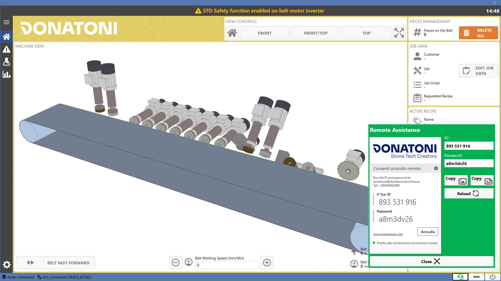
Das Symbol für die Fernwartung und der Hintergrund des Bedienfelds sind grün, wenn das System online und verbindungsbereit ist, andernfalls rot.
 | Als Bild kopieren |
 | Als Text kopieren |
 | Neu laden |
Die Seite “Home” ist die Startseite der Software. Hier können Informationen angezeigt und der Maschinenzustand während der Bearbeitung überwacht werden.

Maschinenansicht
Der Hauptbereich dieser Seite zeigt ein dreidimensionales Modell der Maschine einschließlich der zugehörigen Gruppen und Elemente, mit denen der Bediener interagieren kann.

Je nach dem in die Maschine geladenen Rezept werden die Elemente und Gruppen unterschiedlich dargestellt: farbig, wenn sie für eine im aktuellen Rezept vorgesehene Bearbeitung benötigt werden, andernfalls transparent.
Inaktive Elemente | Aktive Elemente |
 |  |
Durch Drücken auf die dargestellten Elemente werden Popup-Fenster mit Daten zur entsprechenden Komponente und zur zugehörigen Arbeitsgruppe geöffnet.
In jedem dieser Fenster kann der Bediener Echtzeitdaten anzeigen und die Parameter der Gruppe und des Elements konfigurieren.

Verwaltung der Maschinenansicht
In diesem Bereich kann die Maschinenansicht geändert werden.

 | Standardansicht |
 | Frontansicht |
 | Obere Frontansicht |
 | Draufsicht |
 | Ansicht zurücksetzen |
Verwaltung der Werkstücke auf dem Förderband
In diesem Bereich kann der Bediener die in Bearbeitung befindlichen Werkstücke verfolgen und sie bei einer Störung gegebenenfalls ausschleusen.

 | Werkstücke auf dem Förderband |
 | Alles löschen |
Daten und Steuerung des Förderbands
Im unteren Bereich unterhalb der Maschinenansicht befinden sich Daten und Bedienelemente zur Steuerung des Förderbands.

 | Schnellvorschub des Förderbands |
 | Arbeitsgeschwindigkeit des Förderbands |
 | Arbeitsgeschwindigkeit des Förderbands verringern/erhöhen |
 | Stromaufnahme |
 | Aktuelle Förderbandgeschwindigkeit |
Auftragsinformationen
In diesem Bereich werden die derzeit aktiven Auftragsinformationen in den 3 Feldern Kunde, Auftrag und Auftragsreihenfolge angezeigt.
Über die Schaltfläche „Bearbeiten" können die Informationen geändert werden. Alternativ können sie über die entsprechende freigegebene .csv-Datei aus der Ferne geändert werden.
Nach der Änderung werden die neuen Informationen allen Werkstücken zugeordnet, die ab diesem Zeitpunkt eingelegt werden.

 | Kunde |
 | Auftrag |
 | Auftragsreihenfolge |
 | Angefordertes Rezept |
 | Auftragsdaten bearbeiten |
Informationen zum aktiven Rezept
In diesem Bereich werden Informationen zum auf der Maschine aktiven Rezept angezeigt (Name, Abmessungen, besondere Merkmale, Liste der Bearbeitungen).

 | Name |
 | Vorgesehene Dicke |
 | Abmessungen |
 | Bearbeitungen Rezept |
 | Rezept bearbeiten |
 | Rezept auswählen |
 | Rezept aktualisieren |
Zu aktivierendes Rezept auswählen
Dieses Fenster ist über die entsprechende Schaltfläche auf der Seite „Home" zugänglich. Es zeigt die Rezepte an und ermöglicht die Auswahl eines Rezepts, das auf die Maschine geladen werden soll.
Durch Anklicken eines Rezepts in der Liste wird dessen Vorschau angezeigt.
Die Bedienelemente für die Ansicht entsprechen denen auf der Hauptseite.

Durch Drücken auf das dreidimensionale Maschinenmodell werden Fenster zum ausgewählten Element und zur zugehörigen Arbeitsgruppe geöffnet.
Diese Fenster enthalten zwei Bereiche zur Anzeige der Echtzeitdaten und zur Konfiguration der Gruppe und des Elements.

Bereiche
Die in den einzelnen Fenstern bereitgestellten Informationen sind in zwei Bereiche gegliedert.

 | Variablen |
 | Konfiguration |
Variablen
In diesem Bereich können die Variablen des ausgewählten Elements und der zugehörigen Gruppe in Echtzeit überwacht werden.

Gruppe
Im oberen Bereich werden die Positionen der gruppenspezifischen Achsen angezeigt: auf der einen Seite die aktuelle Position, auf der anderen die für die Rezeptbearbeitung anzufahrende Sollposition.
Außerdem wird stets angezeigt, ob die Wasserzufuhr für die Gruppe eingeschaltet ist.

 | Wasserbetrieb |
Element
Der untere Bereich zeigt die spezifischen Variablen des ausgewählten Elements. Die Variablen zum Einschaltzustand der Spindel und zur Stromaufnahme sind immer verfügbar.
Der Bediener kann die Deaktivierung des Elements unabhängig davon erzwingen, ob die entsprechende Bearbeitung im auf die Maschine geladenen Rezept enthalten ist.

 | Bearbeitungszustand |
 | Ampereverbrauch |
 | Element freigeben |
Konfiguration
In diesem Bereich muss der Bediener die Daten des am Element montierten Werkzeugs eingeben.

Gruppe
Im oberen Bereich werden die Symbole der Bearbeitungen angezeigt, die von der Gruppe ausgeführt werden können. In einigen Fällen stehen Schaltflächen zur Steuerung der Gruppenpositionierung zur Verfügung.
Wenn eine Gruppe mehrere Konfigurationen unterstützt, kann der Bediener die zu verwendende Konfiguration auswählen.

Element
Im unteren Bereich muss der Bediener die Daten des am Element montierten Werkzeugs eingeben. Für eine höchstmögliche Bearbeitungsgenauigkeit müssen diese Daten korrekt eingegeben werden.
Der Durchmesser des Werkzeugs muss immer eingegeben werden.

Kalibrier-/Reinigungsgruppe
Variablen
Im Bereich für die Gruppe werden die Variablen der Z-Achse angezeigt: auf der einen Seite die aktuelle Position, auf der anderen die für die Rezeptbearbeitung anzufahrende Sollposition.

Sowohl für das Kalibrierelement als auch für das Reinigungselement werden neben den allen Elementen gemeinsamen Variablen keine weiteren Variablen angezeigt.
Konfiguration
Im Bereich für die Gruppenkonfiguration wird das Symbol für die obere Kalibrier- und Polierbearbeitung angezeigt.
Darunter befindet sich die Schaltfläche, mit der die Gruppe in die Sicherheitsposition gefahren werden kann.

 | Sicherheitsposition |
Für das Kalibrierelement der Gruppe müssen Durchmesser und Dicke des montierten Werkzeugs festgelegt werden.

Für das Reinigungselement der Gruppe muss der Durchmesser des montierten Werkzeugs eingegeben werden.
Kantenpoliergruppe
Variablen
Im oberen Bereich wird die Stromaufnahme der Spindel angezeigt, welche die Oszillation der Gruppe ermöglicht. Oben ist erkennbar, ob die Oszillation aktiv ist.

 | Oszillationszustand |
Im darunterliegenden Bereich werden für jedes Reinigungselement ausschließlich die allen Elementen gemeinsamen Variablen angezeigt.
Konfiguration
Im Bereich für die Gruppenkonfiguration wird das Symbol für die Kantenpolierbearbeitung angezeigt.
Für jedes Reinigungselement der Gruppe muss der Durchmesser des montierten Werkzeugs eingegeben werden.
Gruppe für obere Fase
Variablen
Im Bereich für die Gruppe werden die Variablen der Z-Achse angezeigt: auf der einen Seite die aktuelle Position, auf der anderen die für die Rezeptbearbeitung anzufahrende Sollposition.

Für das Kalibrierelement werden zusätzlich die Positionen des Führungsschuhs angezeigt.

Für das Reinigungselement werden dagegen neben den allen Elementen gemeinsamen Variablen keine weiteren Variablen angezeigt.
Konfiguration
Im Bereich für die Gruppenkonfiguration wird das Symbol für die Bearbeitung der oberen Fase angezeigt.
Für das Kalibrierelement der Gruppe müssen Durchmesser und Dicke des montierten Werkzeugs festgelegt werden.
Für das Reinigungselement der Gruppe muss lediglich der Durchmesser des montierten Werkzeugs eingegeben werden.
Gruppe für untere Fase
Variablen
Im Bereich für die Gruppe werden keine Achsvariablen angezeigt.
Für das Kalibrierelement werden zusätzlich die Positionen des Führungsschuhs angezeigt.

Für das Reinigungselement werden dagegen neben den allen Elementen gemeinsamen Variablen keine weiteren Variablen angezeigt.
Konfiguration
Im Bereich für die Gruppenkonfiguration wird das Symbol für die Bearbeitung der unteren Fase angezeigt.
Für das Kalibrierelement der Gruppe müssen Durchmesser und Dicke des montierten Werkzeugs festgelegt werden.
Für das Reinigungselement der Gruppe muss lediglich der Durchmesser des montierten Werkzeugs eingegeben werden.
Sägeblattgruppe
Variablen
Im Bereich für die Gruppe werden die Positionen der Y- und der Z-Achse angezeigt: auf der einen Seite die aktuellen Positionen, auf der anderen die für die Rezeptbearbeitung anzufahrenden Sollpositionen.

Im Bereich für das Element werden nur die allen Elementen gemeinsamen Variablen angezeigt.

Konfiguration
Im Bereich für die Gruppenkonfiguration werden die Symbole der Bearbeitungen angezeigt, die von der Gruppe ausgeführt werden können.

Mit den unten angeordneten Schaltflächen kann der Bediener die Konfiguration der Sägeblattgruppe entsprechend dem gewünschten Verwendungszweck ändern.
Je nach Typ und Positionierung der Sägeblattgruppe stehen einige Betriebsarten möglicherweise nicht zur Verfügung; in diesem Fall werden sie nicht angezeigt.
 | Oberer Schnitt |  | Unterer Schnitt |
 | Kantenschnitt |  | Schnitt mit manueller Positionierung |
 | Kantenschleifen |  | Obere Kalibrierung |
Je nach Typ und Positionierung der Sägeblattgruppe stehen einige Betriebsarten möglicherweise nicht zur Verfügung; in diesem Fall werden sie nicht angezeigt.
Zum Ändern der Konfiguration oder zum Fahren der Gruppe in bestimmte Positionen werden die darunterliegenden Schaltflächen verwendet.
 | Ausgangsposition |
 | Parkposition |
Wenn die Gruppe für das Schneiden mit Sägeblatt konfiguriert ist, muss der Benutzer im Bereich für das Element die Daten der am Element montierten Scheibe eingeben.
Eine erläuternde Abbildung zeigt, wie die Daten zu messen sind.

Wenn die Gruppe dagegen für Kalibrierbearbeitungen verwendet werden soll, müssen Durchmesser und Dicke des montierten Werkzeugs eingegeben werden.

Stockhammer-/Reinigungsgruppe
Das bei Auswahl der Stockhammer-/Reinigungsgruppe geöffnete Fenster enthält einen zusätzlichen Bereich.

 | Förderbandsteuerung |
Variablen
Im Bereich für die Gruppe werden die Positionen der Y-Achse angezeigt: auf der einen Seite die aktuellen Positionen, auf der anderen die für die Rezeptbearbeitung anzufahrenden Sollpositionen.

Im Bereich für das Element werden nur die allen Elementen gemeinsamen Variablen angezeigt.
Konfiguration
Im Bereich für die Gruppenkonfiguration werden die Symbole der Bearbeitungen angezeigt, die von der Gruppe ausgeführt werden können.

Mit den unten angeordneten Schaltflächen kann der Bediener die Konfiguration der Stockhammer-/Reinigungsgruppe entsprechend dem gewünschten Verwendungszweck ändern.
 | Stocken |
 | Reinigen |
Zum Ändern der Konfiguration oder zum Fahren der Gruppe in bestimmte Positionen werden die darunterliegenden Schaltflächen verwendet.
 | Parkposition |
 | Ausgangsposition |
Für das Stockhammerelement der Gruppe muss der Durchmesser des montierten Werkzeugs festgelegt werden.
Der Durchmesser dieses Elements muss für beide zulässigen Gruppenkonfigurationen festgelegt werden, da jeweils ein anderes Werkzeug montiert ist.
Für jedes Reinigungselement der Gruppe muss der Durchmesser des montierten Werkzeugs eingegeben werden.
Förderbandsteuerung
In diesem Bereich kann die Förderbandgeschwindigkeit für die Ausführung einer Stockbearbeitung gesteuert werden.

 | Förderband-Arbeitsgeschwindigkeit beim Stocken |
 | Reduzierte Förderband-Arbeitsgeschwindigkeit beim Stocken |
 | Geschwindigkeitspriorität für Stocken anwenden |
Auf dieser Seite sind die auf der Maschine aktiven Fehlermeldungen und der zugehörige Verlauf verfügbar.

Alarmkategorien
Auf dieser Seite werden zwei Alarmkategorien unterschieden.

Aktiv | |
Verlauf |
Über die Schaltfläche oben rechts können die Maschinenalarme angepasst werden.
 | Meldungsdatei laden |
Aktiv
In dieser Liste werden die Meldungen zu den derzeit auf der Maschine vorhandenen Fehlern und Warnungen einschließlich des jeweiligen Codes angezeigt.

Verlauf
Diese Liste zeigt den Verlauf aller von der Maschine erkannten Fehler.
Für jeden Eintrag können Kenncode, Aktivierungszustand, Beschreibung sowie Datum und Uhrzeit der Erkennung angezeigt werden.
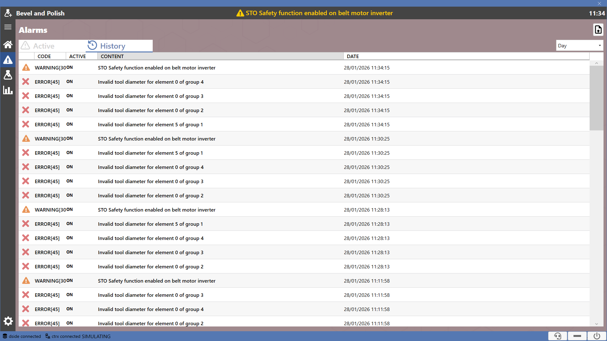
Über das Popup-Menü oben rechts kann der Zeitraum ausgewählt werden, für den die Meldungen angezeigt werden.

Auf dieser Seite können Rezepte für die Werkstückbearbeitung angezeigt, erstellt und geändert werden.
Die Rezeptaktionen werden im linken Bedienfeld verwaltet, das die Rezeptliste enthält. Das Hauptanzeigefenster dient zur Anzeige folgender Inhalte:
Die Maschine mit hervorgehobenen aktiven Arbeitsgruppen.
Das ausgewählte Werkstück mit hervorgehobenen angewendeten Bearbeitungen.
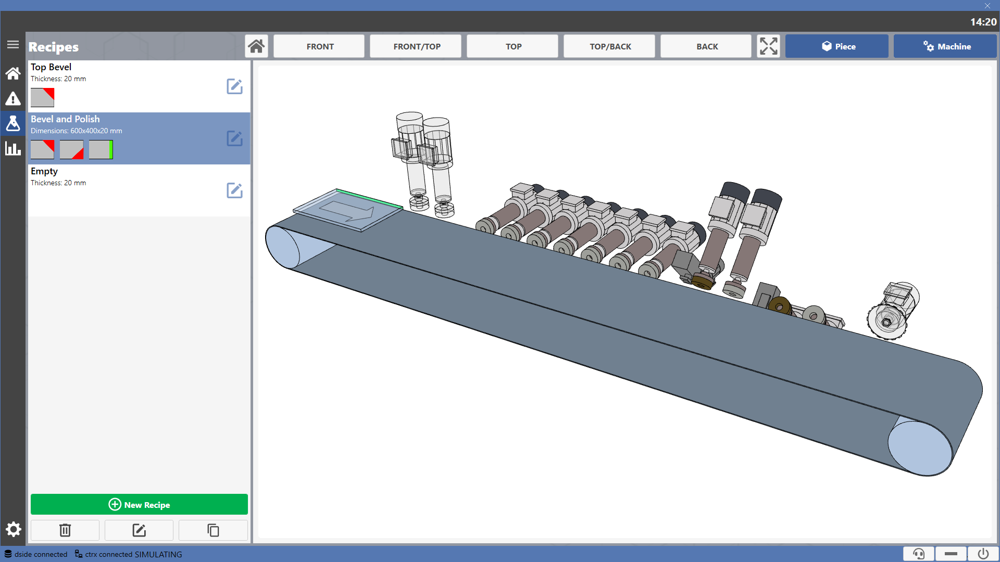
Vorschau
In diesem Bereich wird das ausgewählte Rezept dargestellt. Der Bediener kann auswählen, ob die für diese Bearbeitungen verwendeten Maschinenelemente oder eine Vorschau des resultierenden Werkstücks angezeigt werden sollen.

Über die obere Leiste kann der Kamerawinkel der Vorschau geändert werden. Mit den blauen Schaltflächen kann der Bediener das in der Vorschau anzuzeigende Modell auswählen.
Werkstückansicht | |
 | Maschinenansicht |
Bei Auswahl von „Werkstück" wird das in der Rezeptliste ausgewählte Werkstück mit seinen Bearbeitungen angezeigt.

Rezeptbedienfeld
In diesem Bedienfeld können Rezepte zur Anzeige ausgewählt sowie erstellt, gelöscht, kopiert und geändert werden.

Jeder Listeneintrag zeigt den Rezeptnamen, die Abmessungen des zu bearbeitenden Werkstücks und die Bearbeitungen, aus denen das Rezept besteht.
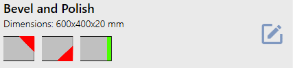
Die Rezepte in der Liste können über die Schaltflächen am unteren Rand verwaltet werden.
 | Neues Rezept |
 | Rezept löschen |
 | Rezept bearbeiten |
Rezept kopieren |
Neues Rezept
Durch Drücken der Schaltfläche „Neues Rezept" wird das Bedienfeld zum Erstellen eines neuen Rezepts geöffnet.

Rezeptdaten
In diesem Bereich können die wichtigsten Informationen für das neue Rezept eingegeben und Bearbeitungen hinzugefügt werden.

 | Name |
 | Dicke |
Über die Schaltfläche oben rechts kann der Bediener das Rezept in ein erweitertes Rezept umwandeln.
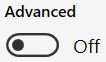 | Erweiterte Einstellungen |
In den erweiterten Rezepteinstellungen können neben der Dicke auch Länge und Höhe des Rezepts eingegeben werden. Bei nicht durchgehenden Bearbeitungen können außerdem unterschiedliche Bezugspunkte für Anfang und Ende der Bearbeitung angegeben werden.
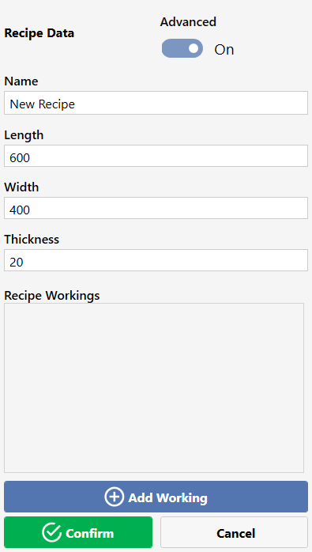
 | Länge |
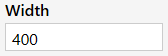 | Höhe |
Unten befindet sich die Schaltfläche zum Hinzufügen von Bearbeitungen zum Rezept.
 | Bearbeitung hinzufügen |
Bearbeitung hinzufügen
Die Schaltfläche „Bearbeitung hinzufügen" öffnet eine neue Registerkarte, auf der die gewünschte Bearbeitung ausgewählt werden kann.
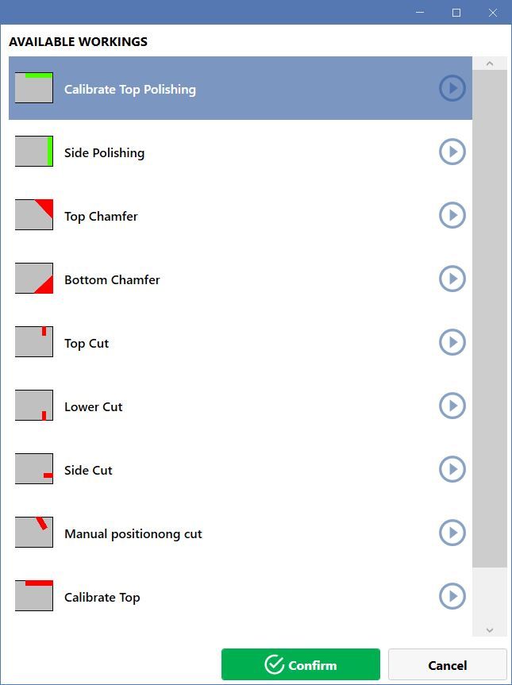
Zum Hinzufügen einer Bearbeitung die Schaltfläche auf der rechten Seite drücken.
 | Bearbeitung anwenden |
Arbeitsgruppe auswählen
Kann die ausgewählte Bearbeitung von mehreren Gruppen ausgeführt werden, kann der Bediener auswählen, welche der verfügbaren Gruppen verwendet werden soll.

Nach der Auswahl steht diese Gruppe für diese Bearbeitung nicht mehr zur Verfügung.
Dieselbe Bearbeitung kann dem Rezept mehrmals hinzugefügt werden, solange weitere Gruppen verfügbar sind.
Bearbeitungsparameter
Beim Auswählen und Öffnen einer neuen Bearbeitung wird die Registerkarte für den ausgewählten Bearbeitungstyp mit den vom Benutzer einzugebenden Daten angezeigt.
Für jede Bearbeitung können die Parameter eingegeben werden, welche ihre Geometrie bestimmen.
In der Vorschau werden die von den Bearbeitungsparametern betroffenen Maße hervorgehoben.
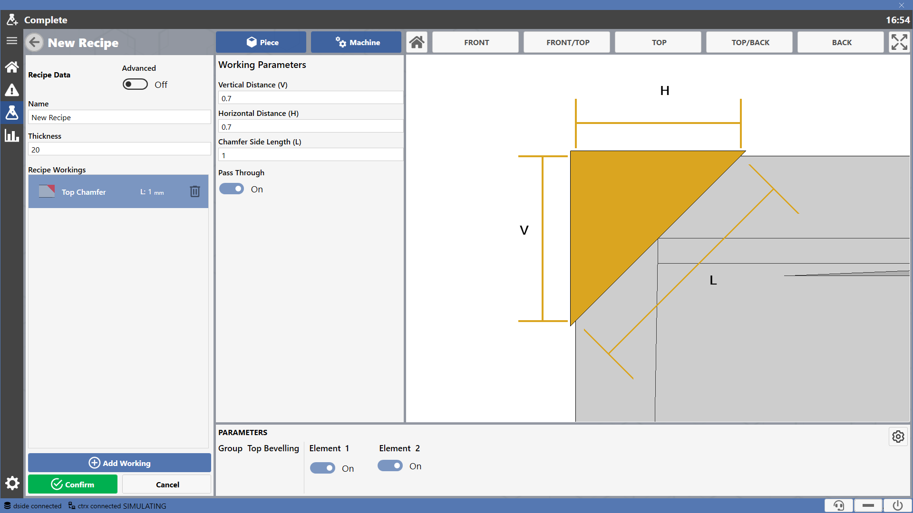
Gruppenparameter
In der Maschinenansicht werden das Werkstück und die Maschine angezeigt, insbesondere welche Gruppen für die Ausführung der auf das Rezept angewendeten Bearbeitungen aktiv bzw. inaktiv sind.
Die der ausgewählten Bearbeitung zugeordnete Gruppe wird grün dargestellt.
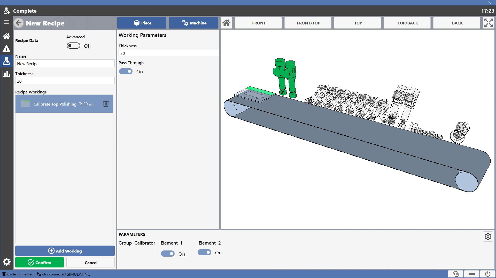
Über das darunterliegende Bedienfeld besteht ein Schnellzugriff auf die Parameter der Gruppe, welche die Bearbeitung ausführt. Dort können die einzelnen Elemente aktiviert und deaktiviert werden.

 | Element aktivieren/deaktivieren |
 | Bedienfeld für erweiterte Parameter |
Deaktivierte Elemente werden in der Maschinenansicht dunkelgrau dargestellt.
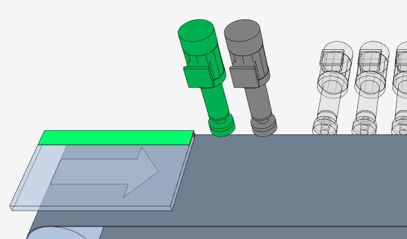
Rezept bearbeiten
Auf der Startseite und der Rezeptseite wird durch Drücken der Schaltfläche zum Bearbeiten des ausgewählten Rezepts das Bearbeitungsbedienfeld geöffnet.
Die wichtigsten Informationen können geändert und Bearbeitungen hinzugefügt werden.
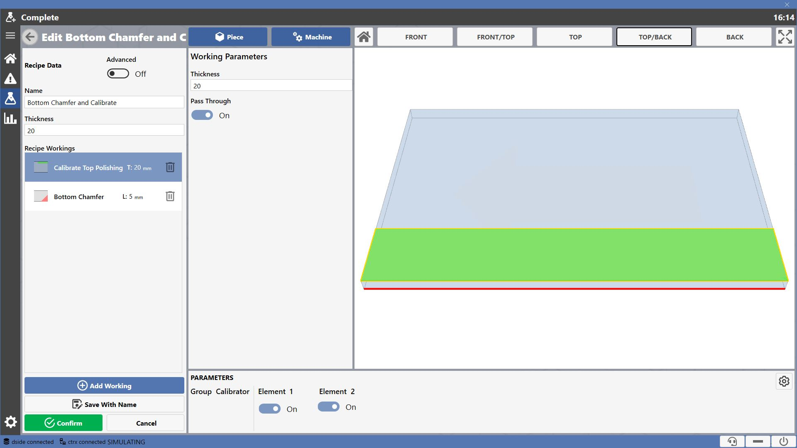
Die im Rezept enthaltenen Bearbeitungen werden im Anzeigefenster dargestellt.

Die Bearbeitungen, aus denen das Rezept besteht, sind in der darunterliegenden Liste aufgeführt.
Jeder Eintrag zeigt eine Vorschau der Bearbeitung, ihren Namen und einige kennzeichnende Maße.

Durch Auswahl der Bearbeitung können ihre Parameter geändert werden.
Zum Entfernen einer Bearbeitung aus dem Rezept die Schaltfläche rechts in der entsprechenden Zeile verwenden.
 | Bearbeitung entfernen |
Nach Abschluss der Bearbeitung kann festgelegt werden, ob die Änderungen auf das ursprüngliche Rezept angewendet oder ein neues Rezept mit allen zugewiesenen Bearbeitungen erstellt werden soll.
 | Speichern unter |
Bei jeder Bearbeitung kann der Bediener die Parameter ändern, welche deren Geometrie bestimmen. In der Vorschau rechts werden die betroffenen Maße dargestellt.

Verfügbare Bearbeitungen
Das Programm stellt die folgenden Bearbeitungen zur Verfügung.
 | Obere Kalibrierung |  | Obere Kalibrierung und Polierung |
 | Kantenschleifen |  | Kantenpolieren |
 | Oberfase |  | Unterfase |
 | Oberer Schnitt |  | Unterer Schnitt |
 | Kantenschnitt |  | Schnitt mit manueller Positionierung |
 | Stocken |  | Obere Reinigung |
Welche Bearbeitungen tatsächlich verfügbar sind, hängt von der Maschinenkonfiguration ab, das heißt von den an der Maschine montierten Gruppen.
Rezeptbearbeitungen
Die Bearbeitungen, aus denen das Rezept besteht, sind in der Liste im linken Bereich aufgeführt.
Jeder Eintrag zeigt eine Vorschau der Bearbeitung, ihren Namen und einige kennzeichnende Maße.

Bei Auswahl des Rezepts werden alle definierenden Parameter sowie eine Vorschau angezeigt. Der Bediener kann die Parameter ändern.
Zum Entfernen einer Bearbeitung aus dem aktuellen Rezept die Schaltfläche rechts in der entsprechenden Zeile verwenden.
 | Bearbeitung entfernen |
Bearbeitungsparameter
Die Bearbeitungsparameter können im dafür vorgesehenen Bereich eingegeben werden.

Im oberen Bereich werden die spezifischen Parameter der ausgewählten Bearbeitung angezeigt.
Bei Bearbeitungen, die diese Option unterstützen, kann der Bediener festlegen, ob sie über die gesamte Werkstücklänge ausgeführt werden sollen.
 | Durchgehende Bearbeitung |
Bei einer nicht durchgehenden Bearbeitung werden zusätzliche Parameter angezeigt.

 | Startabstand |
 | Endabstand |
Bei einem erweiterten Rezept stehen dem Bediener zusätzliche Einstellmöglichkeiten für die Parameter nicht durchgehender Bearbeitungen zur Verfügung.

 | Länge |
 | Maß sperren |
 | Anfang Startbezug |
 | Ende Startbezug |
Vorschau
Im rechten Bereich wird eine Vorschau der Bearbeitung am Werkstückmodell angezeigt. Dabei werden die Abmessungen hervorgehoben, die der Bediener in den Parametern eingeben muss.

Beim Wechsel zur Ansicht des Maschinenmodells wird die der Bearbeitung zugeordnete Gruppe grün hervorgehoben.

Mit dieser Bearbeitung wird Material von der Oberseite des Werkstücks abgetragen, bis die gewünschte Dicke erreicht ist.
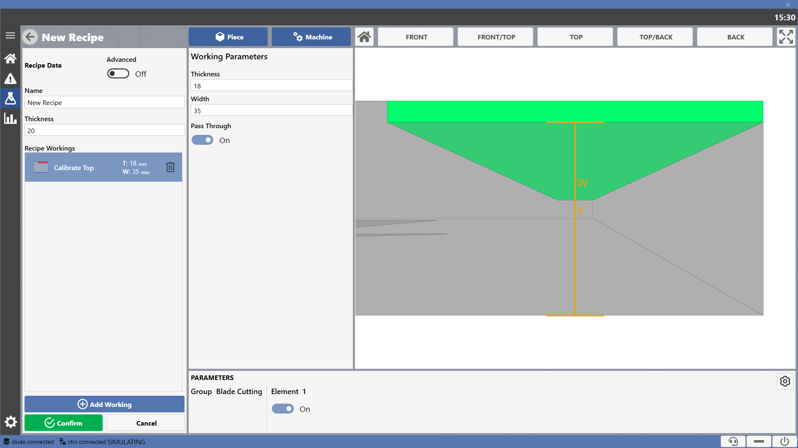
Parameter
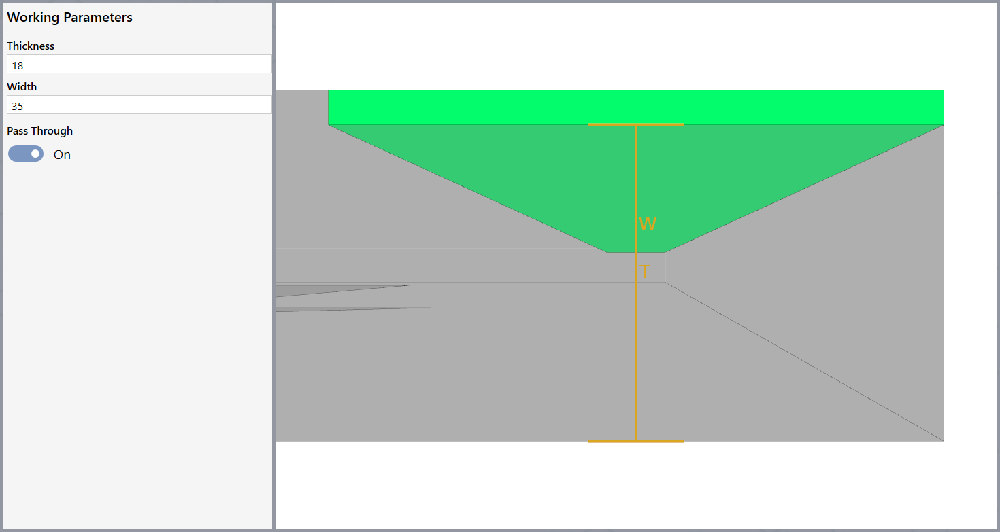
 | Dicke |
 | Höhe |
Verfügbare Gruppen
Kalibrier-/Kantensägeblattgruppe | Sägeblattgruppe |
 |  |
Mit dieser Bearbeitung wird Material von der Oberseite des Werkstücks abgetragen und derselbe Bereich poliert.

Parameter

 | Dicke |
Die Höhe dieser Bearbeitung kann nicht geändert werden.
Die Höhe der Bearbeitung am Werkstück hängt vom Durchmesser des am Kalibrierelement montierten Werkzeugs ab.
Verfügbare Gruppen
Diese Bearbeitung kann ausschließlich von der oberen Kalibrier-/Reinigungsgruppe ausgeführt werden.
Obere Kalibriergruppe |
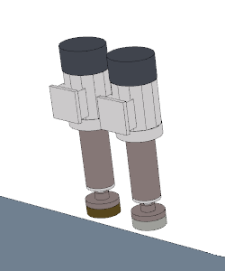 |
Mit dieser Bearbeitung wird Material von der Werkstückkante abgetragen.

Parameter

Verfügbare Gruppen
Diese Bearbeitung kann von der Sägeblatt-/Schleifgruppe ausgeführt werden.
Sägeblatt-/Schleifgruppe |
 |
Mit dieser Bearbeitung wird die Werkstückkante poliert.
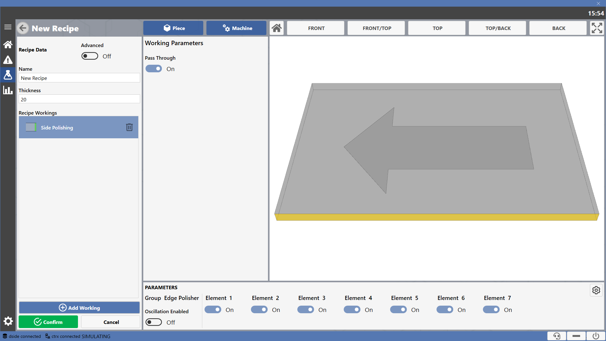
Parameter
Für diese Bearbeitung sind keine Parameter erforderlich.
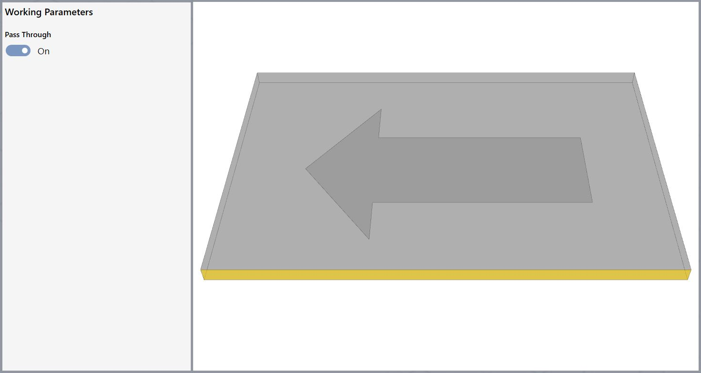
Diese Bearbeitung kann sowohl durchgehend als auch nicht durchgehend ausgeführt werden.
Bei einer nicht durchgehenden Bearbeitung darf der Abstand zwischen Anfangs- und Endpunkt der Bearbeitung nicht kleiner sein als der Durchmesser der an den Reinigungselementen montierten Schleifmittel.
Verfügbare Gruppen
Kantenpoliergruppe |
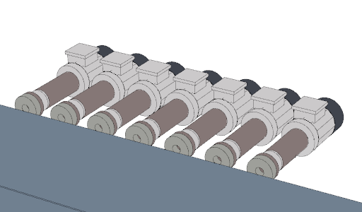 |
Mit dieser Bearbeitung wird die obere Kante der Werkstückseite angefast.

Parameter

 | Vertikaler Abstand |
 | Horizontaler Abstand |
 | Fasenlänge |
Verfügbare Gruppen
Gruppe für obere Fase |
 |
Mit dieser Bearbeitung wird die untere Kante der Werkstückseite angefast.

Parameter

 | Vertikaler Abstand |
 | Horizontaler Abstand |
 | Fasenlänge |
Verfügbare Gruppen
Gruppe für untere Fase |
 |
Mit dieser Bearbeitung wird ein Schnitt an der Oberseite des Werkstücks ausgeführt.
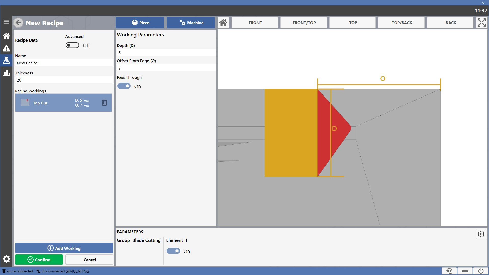
Parameter

 | Tiefe |
 | Abstand von der Kante |
Verfügbare Gruppen
Sägeblatt-/Schleifgruppe |
 |
Mit dieser Bearbeitung wird ein Schnitt an der Unterseite des Werkstücks ausgeführt.
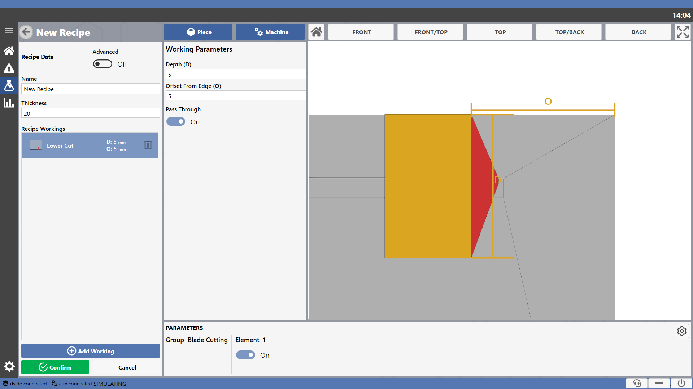
Parameter
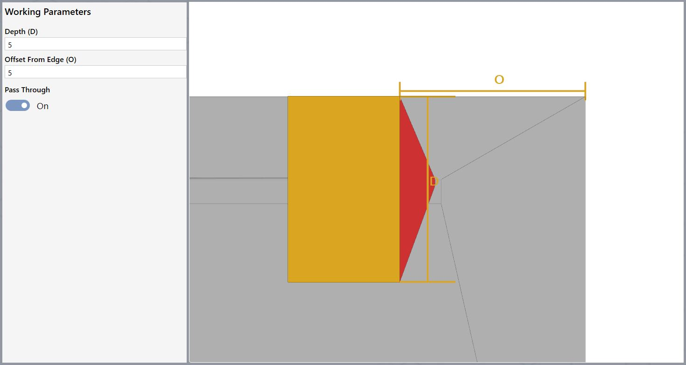
 | Tiefe |
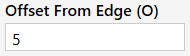 | Abstand von der Kante |
Verfügbare Gruppen
Sägeblatt-/Schleifgruppe |
 |
Mit dieser Bearbeitung wird ein Schnitt an der Werkstückkante ausgeführt.

Parameter

 | Tiefe |
 | Abstand von der Kante |
Verfügbare Gruppen
Sägeblatt-/Kalibrier- und Kantensägeblattgruppe |
 |
Mit dieser Bearbeitung können Position und Neigung der Scheibe manuell festgelegt werden, um einen durchgehenden Schnitt am Werkstück auszuführen.

Parameter
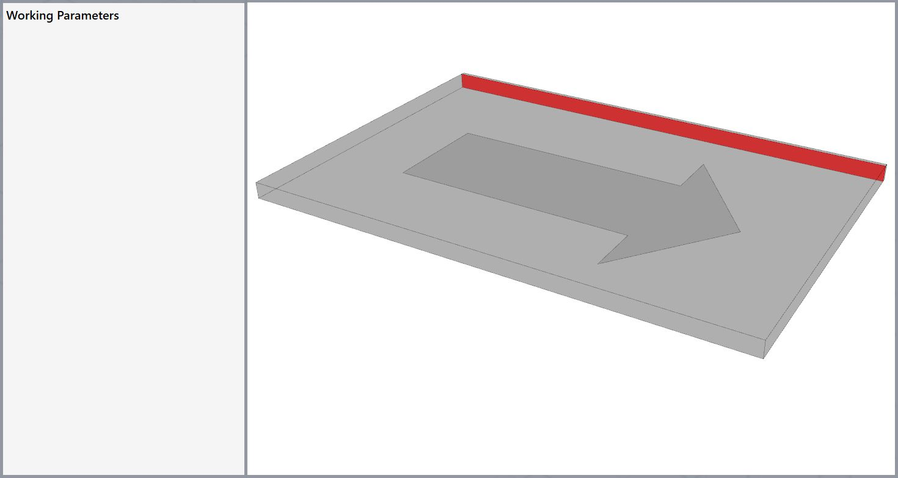
Verfügbare Gruppen
Sägeblattgruppe |
 |
Mit dieser Bearbeitung wird ein Bereich der Werkstückoberseite aufgeraut.

Parameter
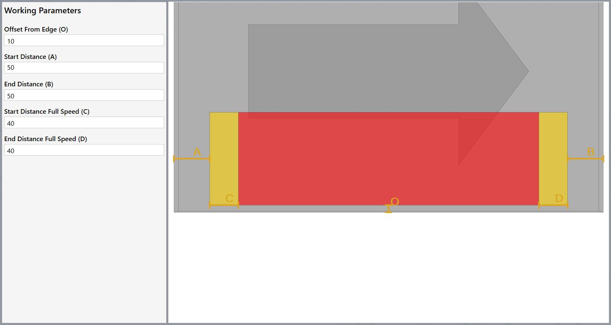
 | Abstand von der Kante |
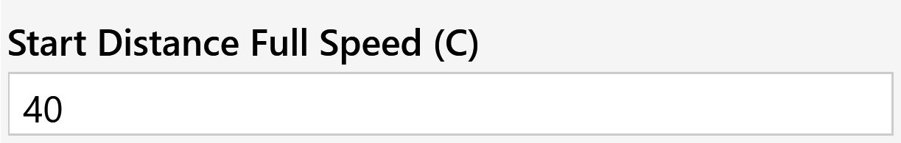 | Abstand bis zur maximalen Geschwindigkeit am Anfang |
 | Abstand bis zur maximalen Geschwindigkeit am Anfang |
Verfügbare Gruppen
Stockhammer-/Reinigungsgruppe |
 |
Mit dieser Bearbeitung wird ein Bereich der Werkstückoberseite gereinigt.

Parameter

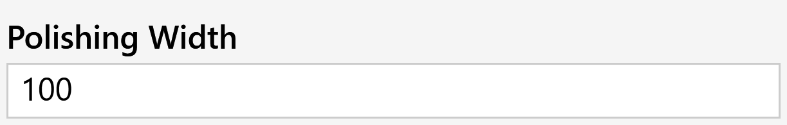 | Reinigungshöhe |
Verfügbare Gruppen
Bocciardier-/Reinigungsgruppe |
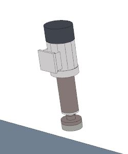 |
Im Bedienfeld für erweiterte Parameter können die Vorlauf- und Verzögerungswerte der verschiedenen Vorgänge angezeigt werden, die von der der ausgewählten Bearbeitung zugeordneten Gruppe und ihren Elementen ausgeführt werden.
Die betroffene Gruppe wird in der Vorschau der Maschinenansicht grün hervorgehoben.

Bereiche
Die in den einzelnen Fenstern bereitgestellten Informationen sind in zwei Bereiche gegliedert.

 | Basis |
 | Korrektur |
Die Änderung aller Parameter in diesem Bedienfeld ist für den Standardbediener gesperrt. Sie kann nur von einer Fachkraft vorgenommen werden, die sich mit dem entsprechenden Kennwort authentifiziert hat.
Basis
In diesem Bereich können die Parameter angezeigt werden, welche das Standardverhalten der Gruppe und der zugehörigen Elemente bei durchgehenden Bearbeitungen festlegen.
Das Verhalten bei nicht durchgehenden Bearbeitungen wird von der Maschine anhand der Geometrie der auszuführenden Bearbeitungen automatisch berechnet.
Die Parameter beziehen sich stets auf den Abstand zwischen der Mitte des Elements bzw. der Gruppe, das bzw. die die angegebene Aktion ausführen soll, und dem Bezugspunkt des zu bearbeitenden Werkstücks, also dessen Vorder- oder Hinterkante.
Negative Werte stehen für einen Vorlauf, positive Werte für eine Verzögerung.
Null bezeichnet den Zeitpunkt, an dem sich der Bezugspunkt des Werkstücks, also dessen Vorder- oder Hinterkante, genau unter der Mitte des betreffenden Elements bzw. der betreffenden Gruppe befindet.
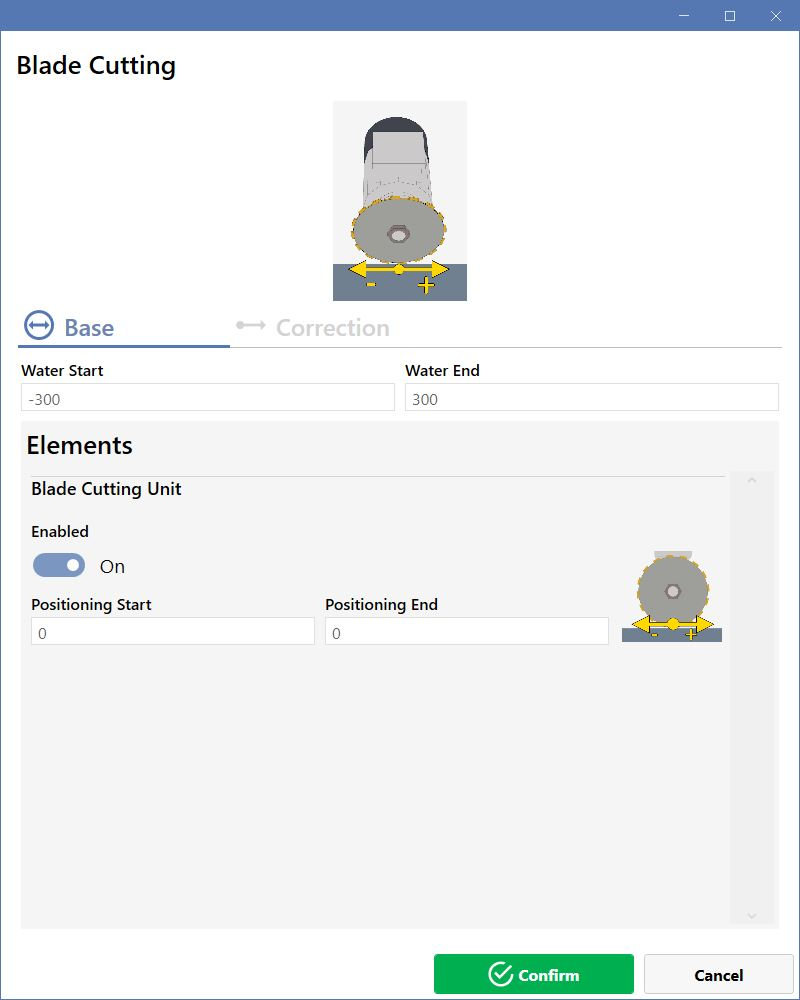
Gruppe
Im oberen Bereich werden die Parameter angezeigt, welche bestimmte Funktionen der ausgewählten Gruppe steuern.
Der Zeitpunkt zum Ein- und Ausschalten der Wasserzufuhr der Gruppe wird immer angegeben.

 | Wasser einschalten |
 | Wasser ausschalten |
Element
In der darunterliegenden Liste werden die Parameter angezeigt, welche die einzelnen Elemente der Gruppe steuern. Die Vorlauf- und Verzögerungswerte für die Positionierung des Elements werden immer angegeben.
Außerdem kann der Bediener festlegen, ob das Element für die ausgewählte Bearbeitung verwendet werden soll.

 | Element freigeben |
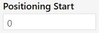 | Eingriffsbeginn |
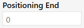 | Eingriffsende |
Korrekturen
Mit diesen Parametern können feste positive oder negative Offsets auf die angezeigten Aktionen angewendet werden. Sie dienen zur Korrektur festgestellter Verzögerungen oder Vorläufe bei der Ausführung dieser Aktionen.
Wenn beispielsweise Element 1 der Gruppe 5 den Positionierungsvorgang stets mit einer Verzögerung von 10mm beginnt, kann der entsprechende Parameter zur Korrektur des Problems auf -10 eingestellt werden.
Die Korrekturen werden sowohl auf durchgehende als auch auf nicht durchgehende Bearbeitungen angewendet.
Die Parameter beziehen sich stets auf den räumlichen Unterschied zwischen dem Zeitpunkt, an dem ein Vorgang mit den Basiseinstellungen des Elements bzw. der Gruppe ausgeführt wird, und dem gewünschten Ausführungszeitpunkt.
Negative Werte stehen für einen Vorlauf, positive Werte für eine Verzögerung.
Null bezeichnet den genauen Zeitpunkt, an dem die Aktion mit den Basisparametern ausgeführt wird.

Gruppe
Der obere Bereich ist den Korrekturen der Gruppenvorgänge gewidmet.
Die Korrektur des Vorlaufs bzw. der Verzögerung beim Ein- und Ausschalten der Wasserzufuhr wird immer angegeben.

 | Korrektur Wasser einschalten |
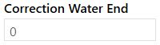 | Korrektur Wasser ausschalten |
Element
In der darunterliegenden Liste werden die Parameter angezeigt, mit denen Korrekturen auf die von den einzelnen Gruppenelementen ausgeführten Vorgänge angewendet werden können.
Für die Positionierung des Elements oder das Einschalten der Spindel können stets Vorlauf- oder Verzögerungswerte eingestellt werden.

 | Korrektur Eingriffsbeginn |
 | Korrektur Eingriffsende |
 | Korrektur Spindel einschalten |
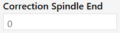 | Korrektur Spindel ausschalten |
Kalibrier-/Reinigungsgruppe
Basis
Die Basisparameter zur Steuerung der Gruppenvorgänge umfassen lediglich die allgemeinen Parameter.
Weder der Bereich für das Kalibrierelement noch der Bereich für das Reinigungselement enthält zusätzliche Angaben zu den bereits beschriebenen Basiseinstellungen.
Korrekturen
Das Kalibrierelement ist an die Z-Achse der Gruppe gekoppelt. Für Korrekturen müssen die Gruppenparameter geändert werden.
Im Bereich für die Gruppe können daher die Vorlauf- und Verzögerungswerte für die Achspositionierung eingestellt werden.

 | Korrektur Positionierungsbeginn |
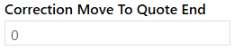 | Korrektur Positionierungsende |
Daher können im Bereich für das Kalibrierelement keine Korrekturen an der Positionierung des Elements vorgenommen werden.

Für das Reinigungselement werden neben den allen Elementen gemeinsamen Parametern keine weiteren Parameter angezeigt.
Kantenpoliergruppe
Basis
Unter den Parametern dieser Gruppe wird der Zeitpunkt zum Ein- und Ausschalten der Spindel angegeben, welche die Oszillation steuert.

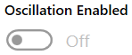 | Schwingung freigeben |
 | Oszillation einschalten |
 | Oszillation ausschalten |
Die Bereiche für die Reinigungselemente enthalten keine zusätzlichen Angaben zu den bereits beschriebenen Basiseinstellungen.
Korrekturen
Im Bereich für die Gruppe können die Vorlauf- und Verzögerungswerte für den Oszillationsbetrieb eingestellt werden.

 | Korrektur Oszillation einschalten |
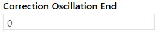 | Korrektur Oszillation ausschalten |
Im Bereich für die Reinigungselemente werden neben den bereits beschriebenen allgemeinen Parametern keine weiteren Parameter angezeigt.
Gruppe für obere Fase
Basis
Die Basisparameter zur Steuerung der Gruppenvorgänge umfassen lediglich die allgemeinen Parameter.
Im Bereich für das Kalibrierelement werden die Parameter für die Vorlauf- und Verzögerungswerte von Bremse und Führungsschuh angezeigt.

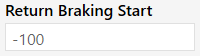 | Rücklaufbremse ein |
 | Rücklaufbremse aus |
 | Positionierungsbeginn Führungsschuh |
 | Positionierungsende Führungsschuh |
Der Bereich für das Reinigungselement enthält keine zusätzlichen Angaben zu den bereits beschriebenen Basiseinstellungen.
Korrekturen
Im Bereich für die Gruppe können die Vorlauf- und Verzögerungswerte für die Achspositionierung eingestellt werden.

Weder der Bereich für das Kalibrierelement noch der Bereich für das Reinigungselement enthält zusätzliche Angaben zu den bereits beschriebenen Korrektureinstellungen.
Gruppe für untere Fase
Basis
Die Basisparameter zur Steuerung der Gruppenvorgänge umfassen lediglich die allgemeinen Parameter.
Im Bereich für das Kalibrierelement werden die Parameter für die Vorlauf- und Verzögerungswerte von Bremse und Führungsschuh angezeigt.

Im Bereich für die Reinigungselemente werden neben den bereits beschriebenen allgemeinen Parametern keine weiteren Parameter angezeigt.
Korrekturen
Im Bereich für die Gruppe werden neben den allgemeinen Parametern keine weiteren Parameter angezeigt.
Weder der Bereich für das Kalibrierelement noch der Bereich für das Reinigungselement enthält zusätzliche Angaben zu den bereits beschriebenen Korrektureinstellungen.
Sägeblattgruppe
Basis
Die Basisparameter zur Steuerung der Gruppenvorgänge umfassen lediglich die allgemeinen Parameter.
Der Bereich für das Element enthält keine zusätzlichen Angaben zu den bereits beschriebenen Basiseinstellungen.
Korrekturen
Im Bereich für die Gruppe werden neben den allgemeinen Parametern keine weiteren Parameter angezeigt.
Der Bereich für das Element enthält keine zusätzlichen Angaben zu den bereits beschriebenen Korrektureinstellungen.
Stockhammer-/Reinigungsgruppe
Basis
Die Basisparameter zur Steuerung der Gruppenvorgänge umfassen lediglich die allgemeinen Parameter.
Im Bereich für das Stockhammerelement kann ausschließlich dessen Aktivierung gesteuert werden.
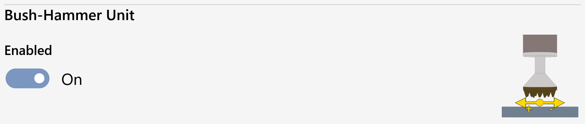
Die Bereiche für die Reinigungselemente enthalten keine zusätzlichen Angaben zu den bereits beschriebenen Basiseinstellungen.
Korrekturen
Im Bereich für die Gruppe werden neben den allgemeinen Parametern keine weiteren Parameter angezeigt.
Weder der Bereich für das Stockhammerelement noch die Bereiche für die Reinigungselemente enthalten zusätzliche Angaben zu den bereits beschriebenen Korrektureinstellungen.
Auf der Seite „Statistiken" können Statistiken zur Maschine und zu den von der Maschine ausgeführten Arbeiten angezeigt werden.
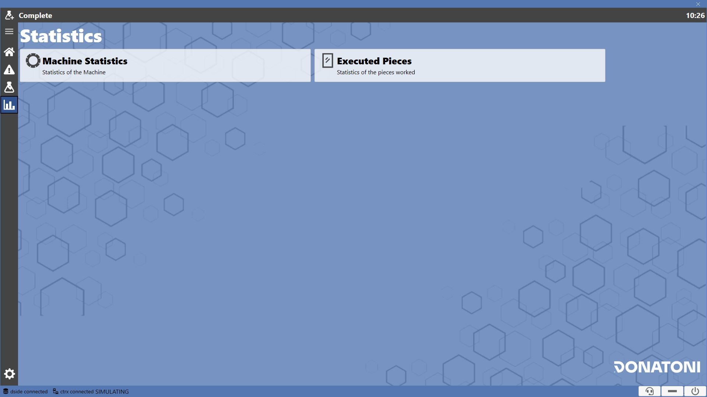
Kategorien
Auf der Hauptseite stehen zwei Schaltflächen zur Verfügung, über die jeweils die Unterseiten für die gewünschte Statistikart geöffnet werden können.

 | Maschinenstatistiken |
Bearbeitete Werkstücke |
Zum Navigieren zwischen den Seiten stehen oben links auf jedem Bildschirm die folgenden Schaltflächen zur Verfügung.
 | Zurück |
Neu laden |
Maschinenstatistiken
Auf dieser Seite werden die Statistiken zur Nutzung der Maschine überwacht.
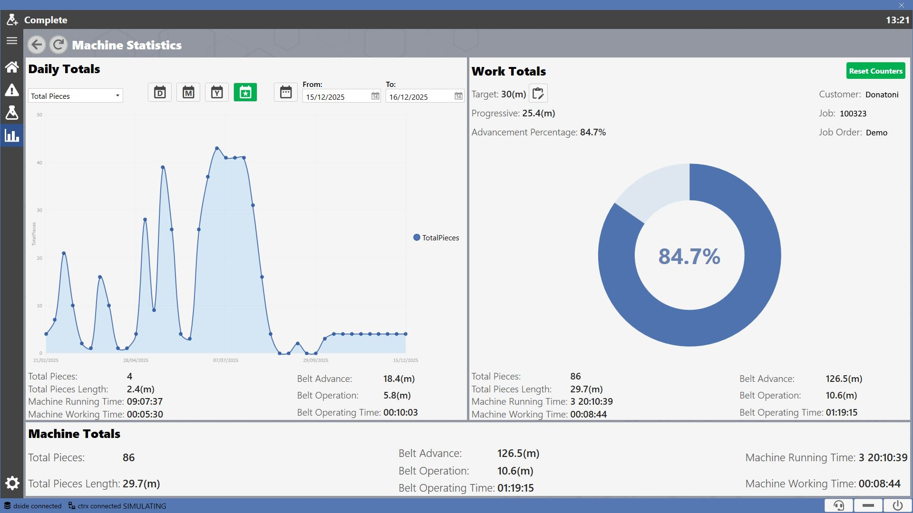
Auf dieser Seite werden die folgenden Statistiken erfasst:
Werkstücke insgesamt | Anzahl der bearbeiteten Werkstücke. |
Gesamtlänge Werkstücke | Gesamtlänge der bearbeiteten Werkstücke. |
Förderbandvorschub | Vom Förderband zurückgelegte Strecke. |
Förderbandbetrieb | Vom Förderband während der Bearbeitung zurückgelegte Strecke. |
Betriebszeit Förderband | Betriebsdauer des Förderbands. |
Zeitdauer Maschine an | Zeitraum, in dem die Maschine eingeschaltet war. |
Zeitdauer Maschine in Betrieb | Zeitraum, in dem die Maschine gearbeitet hat. |
Auf der Seite „Maschinenstatistiken" werden die Statistiken in drei Bedienfeldern angezeigt:
Insgesamt täglich
Insgesamt Betrieb
Insgesamt Maschine
In jedem Bedienfeld werden Statistiken zu denselben Messgrößen dargestellt, jedoch mit unterschiedlichen Bedingungen je nach angezeigtem Bereich.
Insgesamt täglich
In diesem Bereich zeigt ein Diagramm die gewünschte Statistik für den ausgewählten Zeitraum.

Oben befindet sich eine Leiste zum Filtern der im Diagramm anzuzeigenden Statistiken.
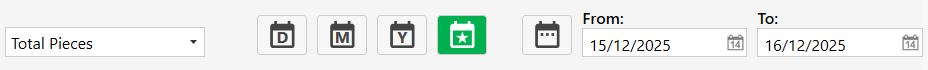
Mit dem ersten Element der Leiste kann die gewünschte Statistik ausgewählt werden.

Mit den Schaltflächen kann ein Zeitraum ausgewählt werden; der ausgewählte Zeitraum wird grün dargestellt.
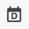 | Tagesstatistiken |
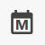 | Monatsstatistiken |
 | Jahresstatistiken |
 | Gesamtstatistiken |
 | Benutzerdefinierte Statistiken |
Der benutzerdefinierte Zeitraum kann über die entsprechenden Elemente rechts neben der Schaltfläche geändert werden. Auf das Kalendersymbol rechts neben dem Datum drücken und das Datum auswählen, das in den Zeitraum aufgenommen werden soll.
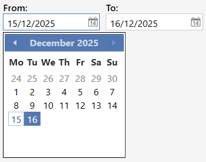
Insgesamt Betrieb
In den Arbeitsgesamtwerten kann der Arbeitsfortschritt in einem Kreisdiagramm als Prozentsatz angezeigt werden. Er wird als Verhältnis zwischen dem erreichten Fortschritt und dem Endziel berechnet.
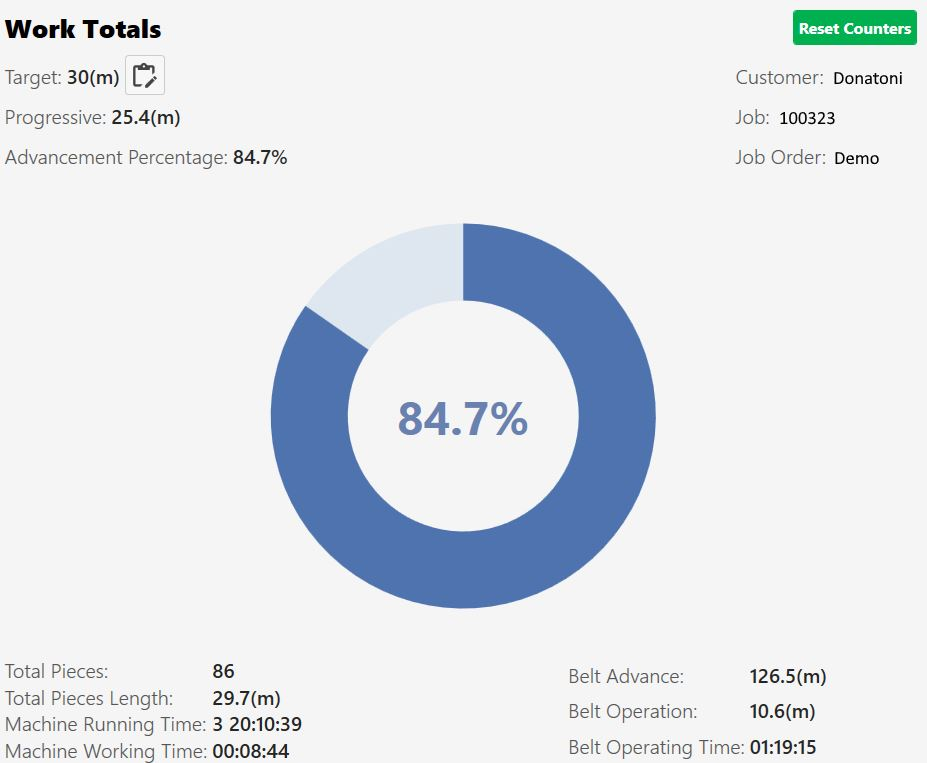
Die Statistiken zum Sollwert werden oben links angezeigt.
Ziel | Vorgegebener Wert für die Länge der zu bearbeitenden Werkstücke. |
 | Sollwert ändern |
Fortlaufend | Länge der seit der letzten Rücksetzung bearbeiteten Werkstücke. |
Fortschritt in Prozent | Prozentualer Arbeitsfortschritt, berechnet als Verhältnis zwischen dem erreichten Fortschritt und dem Endziel. |
Über die Schaltfläche oben rechts können die Zähler zurückgesetzt werden.
Zählerreset |
Insgesamt Maschine
In diesem Bereich werden allgemeine Statistiken für die gesamte Betriebsdauer der Maschine angezeigt.
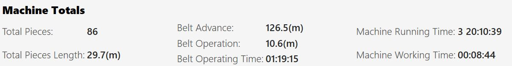
Bearbeitete Werkstücke
Auf dieser Seite kann der Bediener bestimmte Informationen zu den bearbeiteten Werkstücken filtern und anzeigen.

In der Liste, die den Hauptbereich dieses Bildschirms bildet, werden alle bearbeiteten Werkstücke erfasst. Jede Zeile entspricht einem Werkstück.
Eine Zeile kann durch Drücken auf das Kästchen auf der linken Seite ausgewählt werden.
Über die Schaltfläche oben rechts können die ausgewählten Statistiken exportiert werden.
Exportieren |
Statistiken filtern
In der Filterleiste können verschiedene Bedingungen zum Filtern der Statistiken ausgewählt werden.

Durch Drücken auf das erste Element der Leiste kann die zu filternde Eigenschaft ausgewählt werden.

Durch Drücken auf das zweite Element kann der Vorgang ausgewählt werden, anhand dessen bestimmt wird, welche Einträge nach dem Filtern angezeigt werden.

Der für den Filtervorgang zu verwendende Wert ist in die Leiste neben den beiden soeben beschriebenen Elementen einzugeben.

Der ausgewählte Filter wird der Leiste rechts neben der Schaltfläche hinzugefügt. Er kann durch Drücken auf das X links entfernt werden.

Nachfolgend sind die Schaltflächen für die oben beschriebenen Vorgänge aufgeführt.
 | Filter hinzufügen |
 | Filter entfernen |
Wenn die Anzahl der ausgewählten Einträge größer ist als die Anzahl der sichtbaren Einträge, kann über die nummerierten Schaltflächen unten zwischen den Seiten navigiert werden. Die ausgewählte Seitennummer wird grün hervorgehoben.

Die Anzahl der pro Seite anzuzeigenden Zeilen kann ausgewählt werden.

Der folgende Bildschirm zeigt die Einstellungsseite, auf der der Benutzer verschiedene Systemparameter konfigurieren kann.

Bereiche
Zur leichteren Navigation sind die Einstellungen in Bereiche unterteilt, die durch Anklicken der Symbole oben angezeigt werden können.

 | Anwendung |
 | Benutzer |
 | Datenbank |
 | Verbindung |
 | Grafik |
 | Statistiken |
 | Maschine |
 | Alles |
Suchleiste
Unterhalb der Parameterliste befindet sich eine Suchleiste zum Filtern der gewünschten Einträge.

 | Filter löschen |
Weitere Schaltflächen
Unten rechts befinden sich Schaltflächen, über die Fernunterstützung angefordert oder die Maschine ausgeschaltet werden kann.

 | Administratorzugang |
 | Fernwartung |
 | Ausschalten |
Programmversion
In der rechten unteren Ecke dieser Seite wird die derzeit installierte Version der Software D-EDGE angezeigt.
 | Softwareversion |